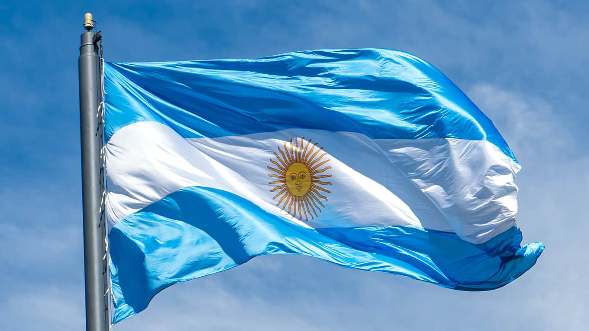

Matias Nuarte
About Me
Hi! I'm Matías, a Software Development student at BYU–Idaho from Argentina, currently living in Mendoza. I'm curious by nature and love learning new things, whether it's coding, building projects, or figuring out how things work. Outside of school, I've spent the last few years working in recruitment, which has taught me a lot about people, communication, and problem-solving. I like mixing creativity with logic, and I'm always up for a new challenge or idea to explore.
Mendoza, Argentina
I'm from Mendoza, Argentina — a region known worldwide for its amazing Malbec wine and stunning Andes mountain views. It's a place where you can go from exploring vineyards to hiking in the mountains in the same day. Mendoza is also famous for Aconcagua, the tallest mountain in the Americas, which attracts climbers from all over the world. Living here means enjoying sunny days, great food (especially asado), and a mix of city life with plenty of nature just around the corner.